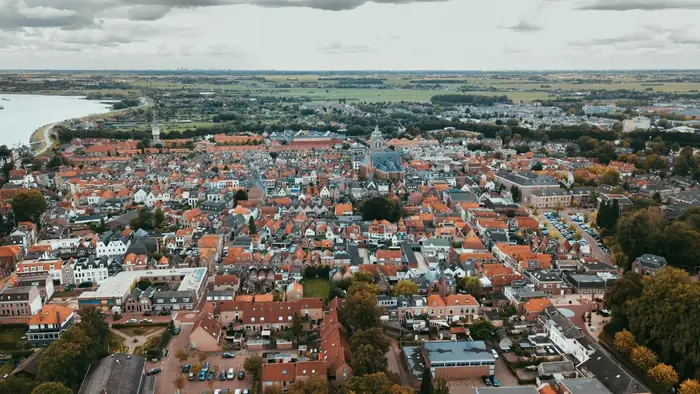
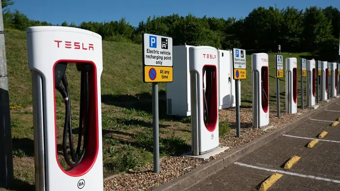
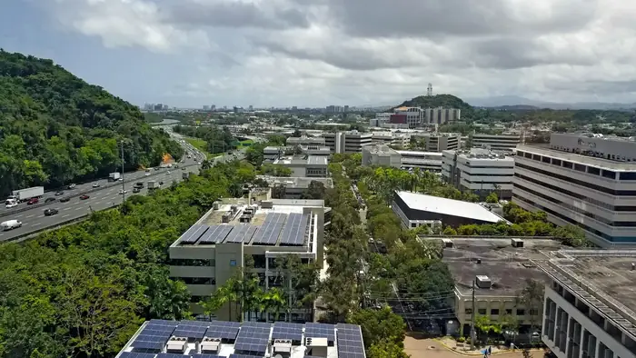
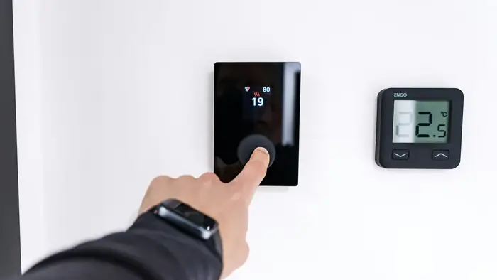
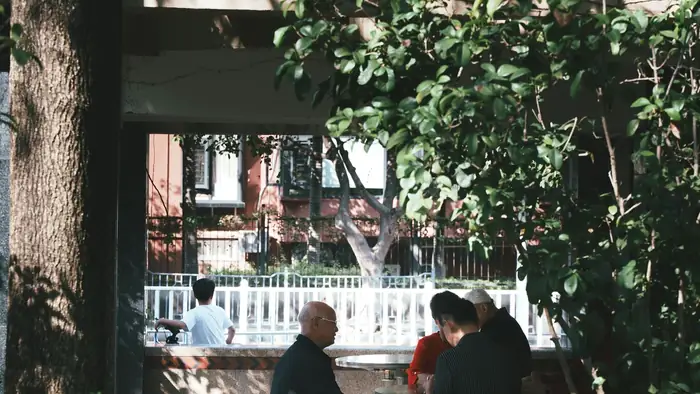

Research
Research
Linked Data, Semantic Integration and Digital Twins
Linked data, ontology and digital twin methods for integrating urban information across sectors and spatial scales.

Multi-scale urban energy data integration for energy poverty assessment: A semantic approach with evidence from the Netherlands
Integrates building and neighbourhood energy data through the Neighbourhood Energy Ontology and machine learning, supporting transparent, traceable energy poverty assessment across spatial scales in the Netherlands.

Bridging Data Silos in Electric Vehicle Charging: Developing the EVCA Ontology to Enhance Interoperability
Develops the EVCA ontology to connect vehicle, charging, mobility and neighbourhood data, reducing data silos and improving interoperability for urban electric vehicle charging analysis and planning.

Building sustainable urban energy systems: The role of linked data in photovoltaic generation estimation at neighbourhood level
Integrates heterogeneous urban datasets with linked data and Semantic Web technologies to estimate neighbourhood photovoltaic generation, improving the traceability and interoperability of renewable energy analysis for urban planning.
Reflecting City Digital Twins (CDTs) for sustainable urban development: Roles, challenges and directions
Reviews the roles, architecture and implementation challenges of city digital twins, clarifying how integrated urban data and digital representations can support sustainable urban governance and planning.
Human Behaviour and Energy Use
Behavioural, personality and decision making perspectives on energy use in homes, hotels and workplaces.
Dynamic shifts in building energy demand: an activity-based analysis of post-COVID work and lifestyle changes
Uses activity-based urban energy modelling and scenarios to examine how post-COVID working and lifestyle changes redistribute building energy demand across space and time, informing demand-sensitive planning.

Are you an energy saver at home? The personality insights of household energy conservation behaviors based on theory of planned behavior
Combines survey data, personality traits and the theory of planned behaviour to explain differences in household energy conservation, supporting more targeted behavioural interventions for resident groups.
Exploring the heterogeneity in drivers of energy-saving behaviours among hotel guests: Insights from the theory of planned behaviour and personality profiles
Examines hotel guests through the theory of planned behaviour and personality profiles, identifying heterogeneous drivers of energy-saving behaviour that can inform more targeted hotel energy-management strategies.
The willingness of social housing tenants to participate in natural gas-free heating systems project: Insights from a stated choice experiment in the Netherlands
Uses a stated choice experiment to assess social housing tenants' participation in natural gas-free heating projects, informing household-centred decisions for the Dutch housing energy transition.
Urban Planning and the Built Environment
Urban planning research on wellbeing, resilience, spatial justice and the built environment.
Understanding subjective well-being in urban emergencies: the role of time use and personality traits
Analyses time use and personality traits to examine subjective well-being during urban emergencies, helping planners understand how activity patterns and individual differences shape residents' emergency experiences.

Community resilience in city emergency: Exploring the roles of environmental perception, social justice and community attachment in subjective well-being of vulnerable residents
Examines environmental perception, social justice and community attachment among vulnerable residents, clarifying how these factors inform community resilience and human-centred urban emergency planning practice and policy.
Towards a human-centric city emergency response: Modelling activity patterns of urban population
Models urban population activity patterns to support a human-centred understanding of emergency response, helping planners assess how everyday movements shape demands on city systems during disruptions.
Beyond the Office: A Systematic Review of Changing Working Patterns and Their Urban Footprints
Synthesises evidence on changing working patterns and their effects on workplaces, housing, mobility and urban form, providing a planning perspective on the spatial consequences of flexible work.